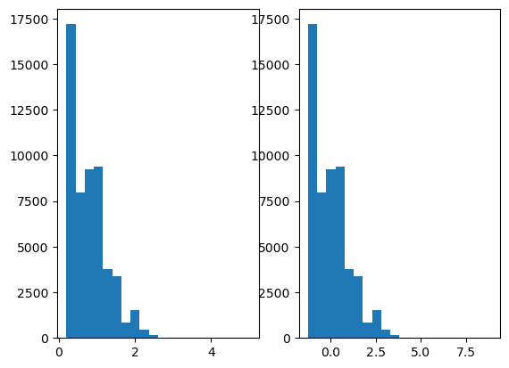

import statsmodels.api as sm
import matplotlib.pyplot as plt
from scipy import stats
import pandas as pd
diamond = sm.datasets.get_rdataset("diamonds", "ggplot2")
df = pd.DataFrame(data = diamond.data)
df.head()
fig,(ax1,ax2)= plt.subplots(1, 2)
ax1.hist(df['carat'],bins = 20)
df['carat_z'] = stats.zscore(df['carat'])
ax2.hist(df['carat_z'],bins =20)
plt.show()